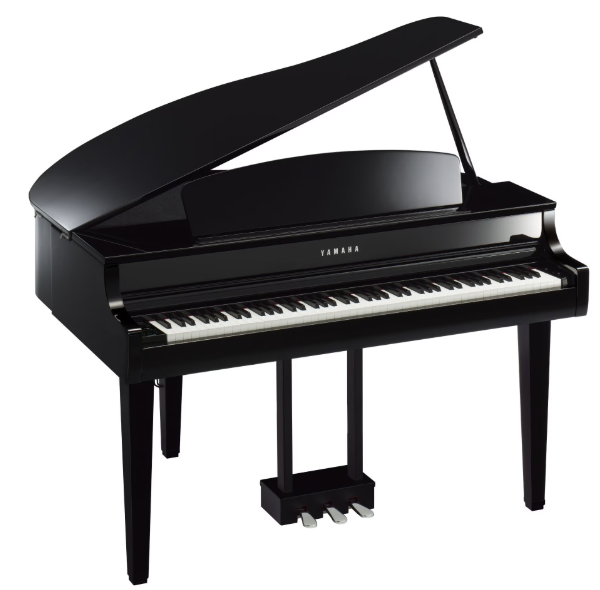
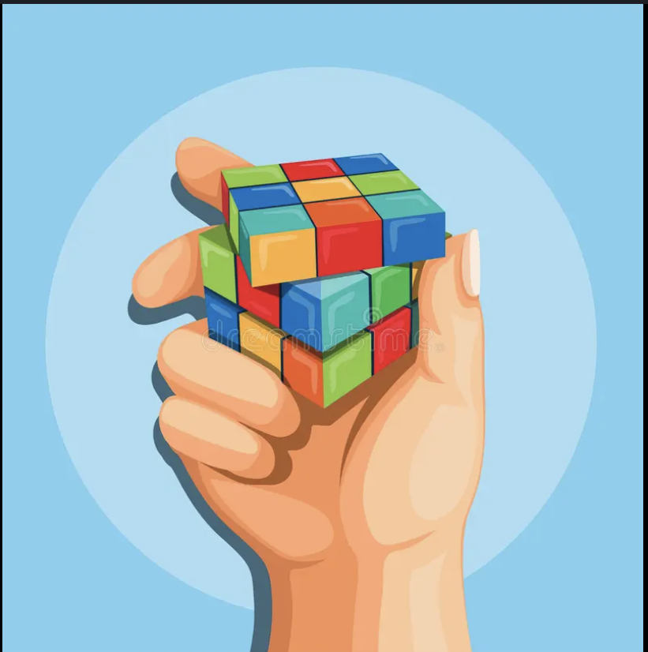
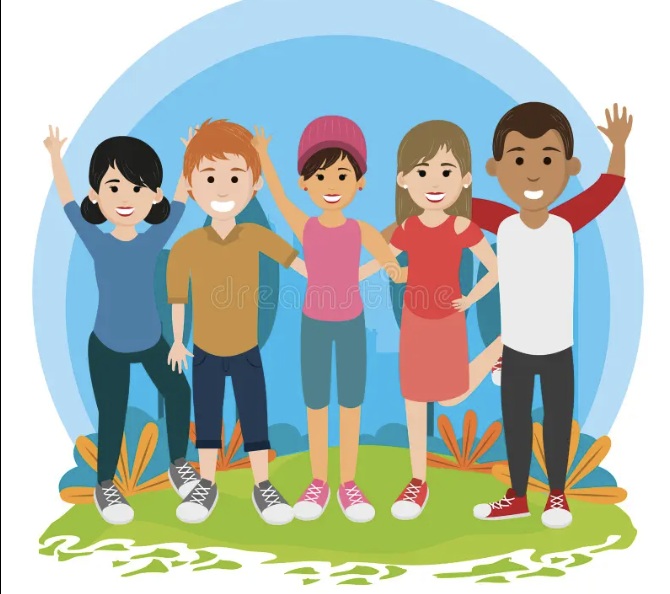
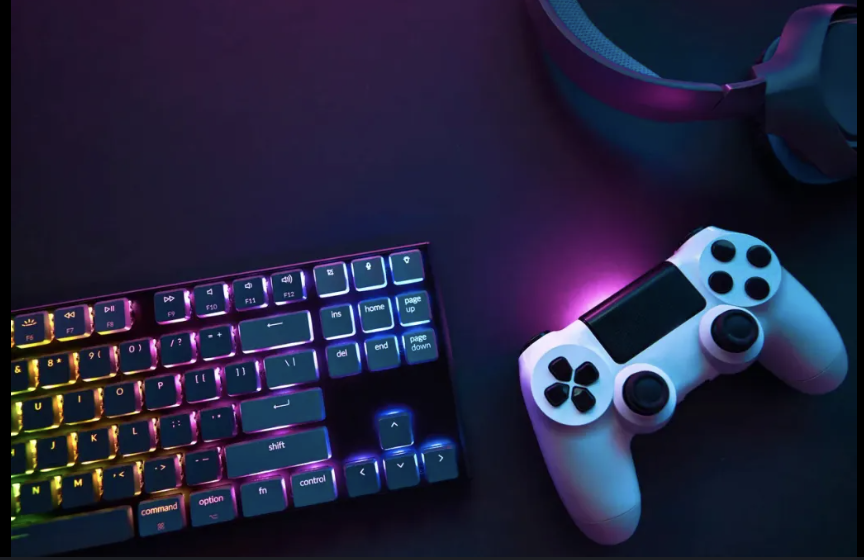

Sports & Fitness
I enjoy playing basketball at the recreation center with friends to stay active, build teamwork, and relieve stress.
What I do when I'm not building software - staying active, creative, and connected.
I enjoy playing basketball at the recreation center with friends to stay active, build teamwork, and relieve stress.

I play the piano at home during my free time, which helps improve my focus, creativity, and discipline.

I enjoy solving Rubik's Cubes and large 1,000-piece jigsaw puzzles, which strengthens logical thinking and patience.

I enjoy hanging out with friends and meeting new people to build communication skills.

I occasionally play video games to relax and enjoy strategic challenges.